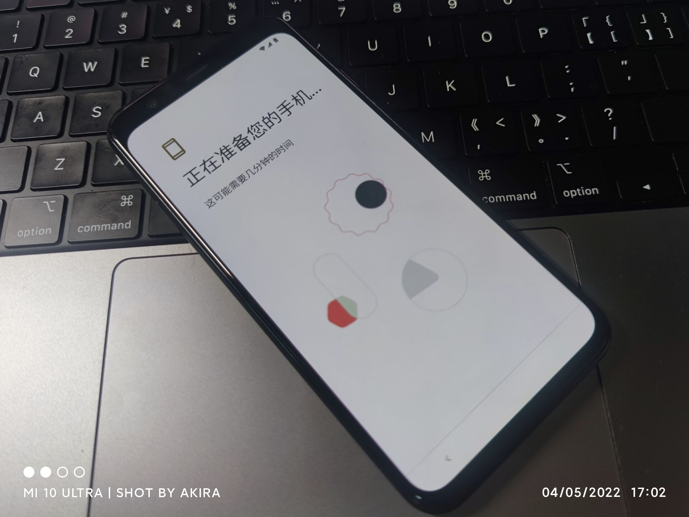

啊，确实。如果诸位好奇的话可以帮我试试。
如果充电口能嗅到一股新设备开封的味道，那大概应该确实还是主板烧了吧。
这已经不是第一年了。总要在不合时宜的时间节点坏掉什么重要的东西，然后让我这个纯粹的设备爱好者的信仰蒙尘。虽然我日常用设备的时候确实不怎么讲求爱惜。
然后，这台 Pixel 4 只陪伴我短短 11 个月。
它走的十分戏剧性。
前一秒我还连着 AirPods Pro 端着餐盘刷着推文，下一秒音频停滞荧幕卡顿。下意识重启设备之后它再也无法开机。或许拔管让它咽气的人正是我自己，我无法理清这点。
原先应该「提前离去」的是它的小米大哥，那台正反面碎得片片的，系统卡卡的，电池拉拉的但是依旧还活着似乎还能用的小米 10 Ultra，即将化身折叠屏。但是这台 Pixel 4 发挥了大无畏的献身精神，然后我很苦恼。
至今连着充电线它还能够取电，或许它还有着最后的倔强，但是我很怕它变成我人生中的第二台 Galaxy Note 7，就此作罢。
我已经不怎么用由于系统负优化对焦对不上色彩过饱和的小米 10 Ultra 拍摄日常，但是忘记开启 Google Photos 而消失的这 11 个月的回忆，我确实无法想起什么重要的东西。为什么我什么都想不起来呢？啊，那或许是因为我的 2022 被偷走了，大家都一样。
这台 Google Pixel 4 是在去年春天初访的时候来到我身边的，作为无法按期兑换的某个小长假的物质代偿，我去某鱼上搜刮了一台「全新未开封」的它。虽然我对看起来长得十分像 Apple 电源适配器的随机附送和有些模糊的设备信息贴纸表示 100.5％ 的疑惑，但是缎面磨砂玻璃背板和小巧精致的机身结构确实令我赞不绝口，这是现在的 Google 毫无疑问丢失的特征，也是我逐渐模糊的感受。
倚靠着它的轻巧，我用它刷推看文，用它听播客听音乐，相册里有着我长达两周的咖喱生活，有着久未逢面的朋友的尴尬的躲避，有着夏日玄武湖的荷花和初春紫金山的梅花，也有着数不清的截图吐槽嘲讽阴阳怪气和哑然失笑。但是在它捂着额头告诉我它睁不开眼睛的瞬间，我什么都想不起来。
思考了许久，我似乎没什么心情。
感觉什么重要的东西消失了，但是我却无法回忆它的存在。
当然，我从未对它完全信任，我连每日打卡的软件都没有安装在它身上。但是，我或许对它都是信任的，因为所有赛博世界里证明我是我的存在全部都能在它身上得到体现。它就是我的生活，正如它为什么会来到我身边——「作为一段无法获取的日常的永恒回忆」。
数据保全需要成为日课，微信聊天记录本地保存还是需要鞭尸张小龙，用设备的时候需要更加小心爱惜。但是在所有我经手的设备中，我确实对你有些许偏心。
或许，只是时间到了。
今年 2 月停掉了系统更新的你不愿意延期退休，
我也只好改掉你的年金计划停掉你的碎屏险。
或许，只是时间到了。2023 年到了。
那份日常麻烦还给我。
同时，感谢你过去 11 个月的付出，晚安。